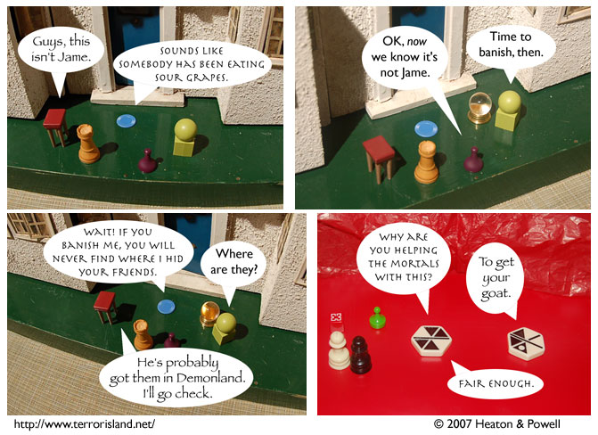

Strip #184
— Wednesday, August 15, 2007
It’s a metaphorical goat, but wouldn’t it be ZANY if it weren’t?
Notes, Thoughts, &c.
Ben’s Notes
Last time, I joked a bit about a ridiculous way for you to spend money supporting a webcomic. In case you want a more practical way, why not go buy some stuff from Reprographics? I hear he could use that now.
In particular, I recommend the Baffler!s. I’ve had good experiences with the traffic light one from this comic and the blue one in the middle of the bottom row in this comic.
Lewis’s Notes
If I had a catch-phrase, I’m pretty sure it would be “Sounds like somebody’s been eating sour grapes.”
Actually, that’s the catch-phrase I’d have if I wanted people to hit me, because saying that to someone who is already upset (which is when it would be most appropriate), is a good way to incite that person’s rage.